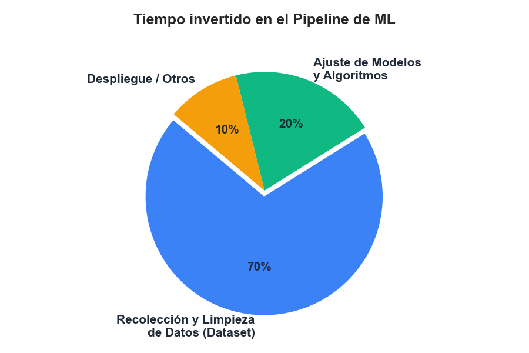
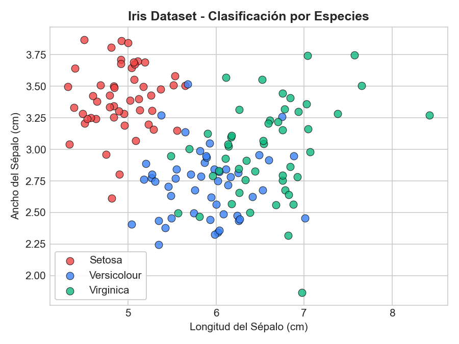
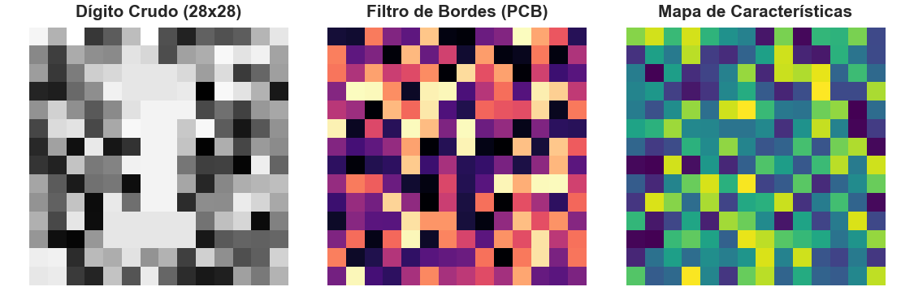
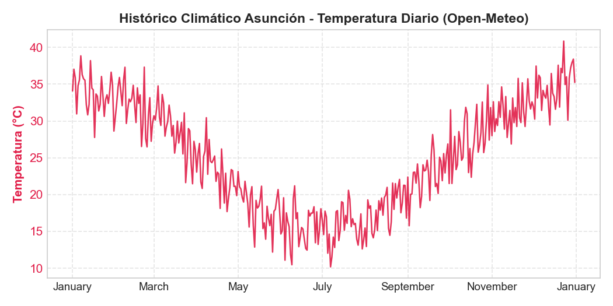
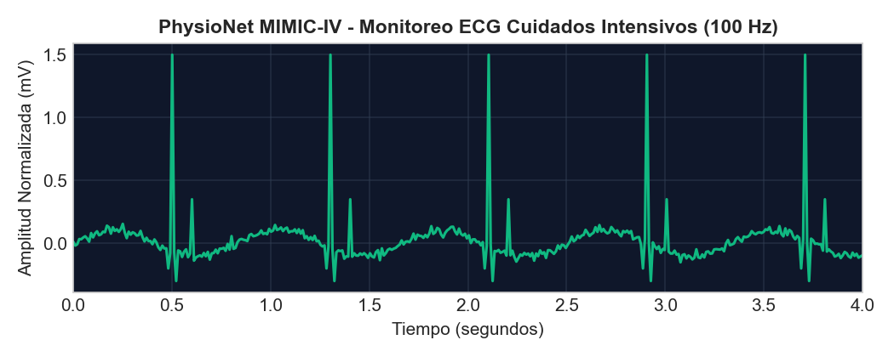
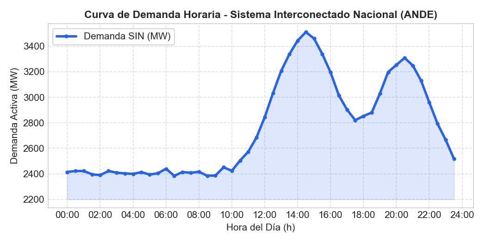
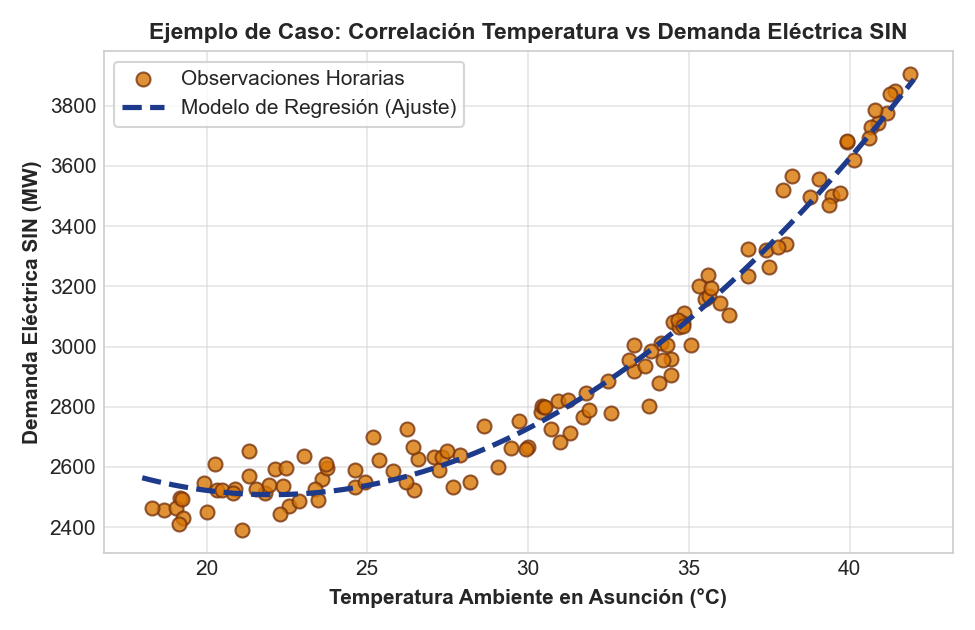

Semestre Séptimo - Electrónica
En Machine Learning, un algoritmo es tan bueno como los datos con los que fue entrenado. Un modelo simple con excelentes datos superará siempre a una red neuronal compleja alimentada con datos defectuosos.
En el ámbito laboral y de investigación en ingeniería, la mayor parte del esfuerzo humano se dedica al tratamiento preliminar:
Hoy conoceremos exactamente dónde buscar estos datos en alta calidad para sus proyectos de semestre.

Para prototipar y validar ideas de algoritmos de manera directa, usamos estándares que ya vienen integrados en librerías como scikit-learn:
El "Hello World" de Machine Learning. Clasifica 3 especies de flores a partir de 4 medidas físicas (largo/ancho del pétalo y sépalo).
Predicción del valor económico de viviendas en base a variables como cercanía a centros productivos, impuestos y zonas geográficas.

El referente universal para introducirse en Redes Neuronales y Visión por Computador.
El mayor archivo universitario del mundo para docencia e investigación en ciencia de datos.
Para entrenar sistemas modernos capaces de reconocer objetos de forma autónoma (YOLO, Faster R-CNN, TensorFlow Lite):
La mayor comunidad colaborativa de visión en el mundo. Más de 200,000 datasets pre-anotados con bounding boxes y máscaras de segmentación listos para descargar.
Los estándares monumentales en deep learning industrial, conteniendo millones de imágenes cotidianas e industriales etiquetadas al detalle.

Utilizar catálogos abiertos de visión nos permite desarrollar prototipos de hardware y software de alto impacto ingenierial:
Inspección óptica automática con cámaras por encima de cintas transportadoras para identificar soldaduras frías, cortos eléctricos o componentes faltantes en placas de circuito impreso.
Navegación visual en drones e integrados automotrices autónomos (ROS) para el reconocimiento y evasión de obstáculos, personas o lectura de señales.
Lectura automática de números led o mecánicos mediante cámaras web embebidas en medidores eléctricos convencionales, evitando el reemplazo masivo de contadores.
Las series temporales atmosféricas son inestimables para proyectar consumo en redes y generación solar o eólica:
Servicio de la Agencia Espacial Europea que entrega reanálisis atmosféricos globales históricos hora por hora por latitud y longitud planetaria (viento, temperatura, radiación).
Catálogos federales norteamericanos con radares precipitacionales, oceanografía y mediciones de ozono y temperaturas globales.

Open-Meteo ofrece consultas HTTP gratuitas e inmediatas a archivos meteorológicos históricos en cualquier coordenada geográfica sin necesidad de API Keys ni registros.
Ejemplo elemental de obtención automática de datos para Asunción, Paraguay (Lat: -25.26, Lon: -57.57):
import requests
import pandas as pd
# Consultar temperatura y lluvia diaria histórica de Asunción via HTTP REST API
url = "https://archive-api.open-meteo.com/v1/archive?latitude=-25.26&longitude=-57.57&start_date=2023-01-01&end_date=2023-12-31&daily=temperature_2m_max,precipitation_sum"
datos = requests.get(url).json()
# Convertir instantáneamente a un DataFrame de Pandas
df_clima = pd.DataFrame(datos['daily'])
df_clima['time'] = pd.to_datetime(df_clima['time'])
print(df_clima.head()) # Listo para graficar o correlacionarÚtiles al evaluar viabilidad de proyectos, consumo por habitante o proyecciones de conectividad en redes sanitarias y eléctricas:
El Banco Mundial publica miles de indicadores anuales para todos los países sobre infraestructura, adopción de internet, electrificación rural y deuda soberana.
Para la especialidad de Electrónica Médica, el aprendizaje automático es el motor en sistemas hospitalarios modernos de monitoreo no invasivo:
El estándar cumbre creado por el MIT & Beth Israel Hospital. Contiene millones de registros clínicos reales y desidentificados de pacientes de cuidados intensivos (UCI).

El diagnóstico por visión artificial permite realizar cribados hospitalarios automáticos de altísima precisión y bajo costo operacional:
Publicado por los Institutos Nacionales de Salud del gobierno norteamericano (NIH).
Repositorio especializado disponible públicamente en Kaggle y portales clínicos.
Para desarrollar proyectos de ingeniería que resuelvan necesidades inmediatas dentro del territorio nacional paraguayo:
El Sistema Interconectado Nacional (SIN) gestionado por ANDE, Itaipú y Yacyretá muestra patrones periódicos con dos picos críticos diarios:
Predecir con exactitud esta curva a 24/48 hs vista usando ML es un clásico de ingeniería de redes eléctricas.

El Instituto Nacional de Estadística (INE) provee microdatos descargables en CSV de la Encuesta Permanente de Hogares (EPHC) y del Censo 2022. Ideales para segmentación y consumo urbano en Paraguay.
La Dirección de Vigilancia de la Salud publica reportes históricos de Arbovirosis (Dengue, Chikungunya, Zika) por municipios. Excelente para modelar propagación de brotes vs lluvias.
La Dirección de Meteorología e Hidrología (DINAC) almacena alturas fluviométricas de los ríos Paraguay y Paraná para predecir crecidas marítimas y alertas tempranas de estiaje.
"Predicción Horaria de Demanda Eléctrica en el Sistema Interconectado Nacional (SIN) según Variables Climáticas de Asunción"
Construir un modelo supervisado que ayude al despachador de red (ANDE) a pronosticar con anticipación si la demanda excederá el límite crítico en verano ante olas de calor.
Al unir las dos bases por hora cronológica (timestamp), grafiquemos el comportamiento físico del sistema en el Paraguay:
Comportamiento No Lineal: Cuando la temperatura exterior es inferior a los 26°C, la carga base es relativamente estable.
El Efecto Aire Acondicionado: A partir de los 28°C - 30°C, la curva se dispara exponencialmente por encendidos simultáneos del parque de climatización en Gran Asunción.
Una simple regresión lineal fallaría aquí; el EDA nos sugiere un modelo polinómico o Random Forest.

Así luce nuestro archivo notebooks/01_EDA.ipynb al importar la tabla consolidada en Python:
import pandas as pd
import matplotlib.pyplot as plt
import seaborn as sns
# 1. Cargar el dataset combinado en crudo que guardamos en nuestra carpeta de trabajo
df_sin = pd.read_csv("data/raw/demanda_sin_clima_py.csv")
# 2. Verificar la integridad: no queremos valores nulos en medio de la serie temporal
print("Anomalías vacías encontradas por variable:\n", df_sin.isnull().sum())
df_clean = df_sin.dropna().copy()
# 3. Resumen estadístico de las temperaturas y cargas horarias
display(df_clean.describe())
# 4. Graficar la relación (Regresión Cuadrática de Prueba) en Seaborn
plt.figure(figsize=(7, 3.2))
sns.regplot(data=df_clean, x="temp_ambiente", y="demanda_mw", order=2,
scatter_kws={'alpha':0.6, 'color':'#D97706'}, line_kws={'color':'#1E3A8A', 'linewidth':2})
plt.title("Ajuste del Modelo de Regresión Cuadrático: Demanda vs Temperatura")
plt.xlabel("Temperatura Ambiente (°C)"); plt.ylabel("Demanda Activa SIN (MW)")
plt.grid(True, alpha=0.3); plt.show()data/raw/..gitignore para evitar bloqueos al hacer empuje (push) a GitHub.pandas.read_csv() dentro de su notebook inicial: notebooks/01_EDA.ipynb.¡Recuerden aprovechar el horario de tutorías con el auxiliar o el docente para validar sus ideas de proyecto!